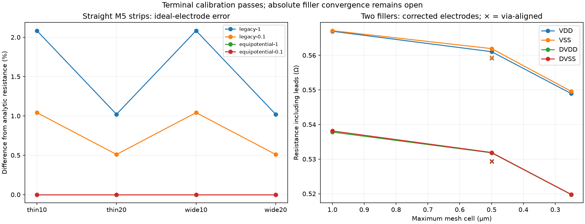

The reference mesh previously retained half-cell resistance inside each nominal ideal electrode. The corrected mode removes that contribution. Four straight M5 strips now match R = sheet resistance × (length − 0.4 µm) / width at both tested mesh sizes, within 1e-9 relative error. Historical results remain available under the legacy mode.

Magic's raw strip values instead match the distance between the labels' lower-left x coordinates. This is evidence for a different terminal convention in these controls, not a general characterization of every Magic geometry. SPICE export is 0.0005 Ω higher per resistor in these tests.
Default threshold-zero extraction omits the two wide strips. Forcing every net creates duplicate parallel resistors. A negative threshold with only canonical net names selected recovers one path per strip; this remains a diagnostic recipe, not a production extraction change.
| Rail | Corrected 0.25 µm mesh (Ω) | Earlier Magic control (Ω) | Difference | Last mesh change |
|---|---|---|---|---|
| VDD | 0.548940 | 0.499084 | 9.99% | -2.16% |
| VSS | 0.549593 | 0.498746 | 10.20% | -2.19% |
| DVDD | 0.519746 | 0.451211 | 15.19% | -2.27% |
| DVSS | 0.519803 | 0.451234 | 15.20% | -2.28% |
The corrected 1 µm hierarchical netlist passes an independent ngspice DC check. Finer runs use matrix solves only. Resolving all via edges at 0.5 µm also passes stitching, with 6,715 seam ports and about 1.1 million nodes per model, but does not establish absolute convergence.
Remaining work: the corrected fine mesh still differs from Magic by 10.0–15.2%. Match terminal measurement planes, then isolate bends, parallel layers and vias with analytic controls before qualifying capacitance and device-aware sections. No full-ring RC or optical-performance pass is claimed.